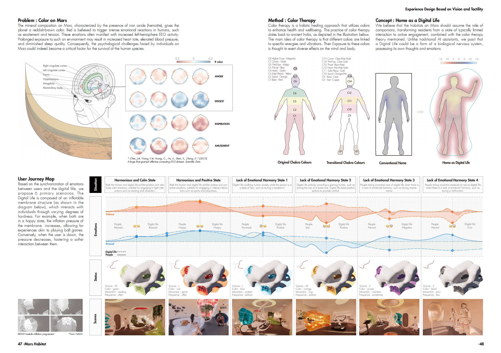
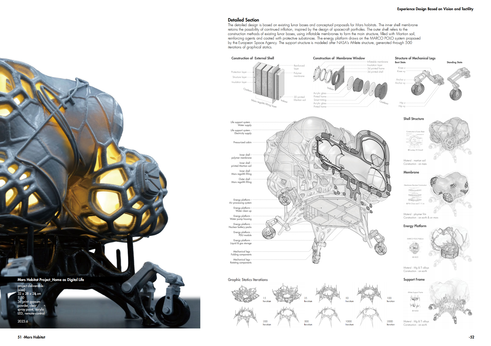
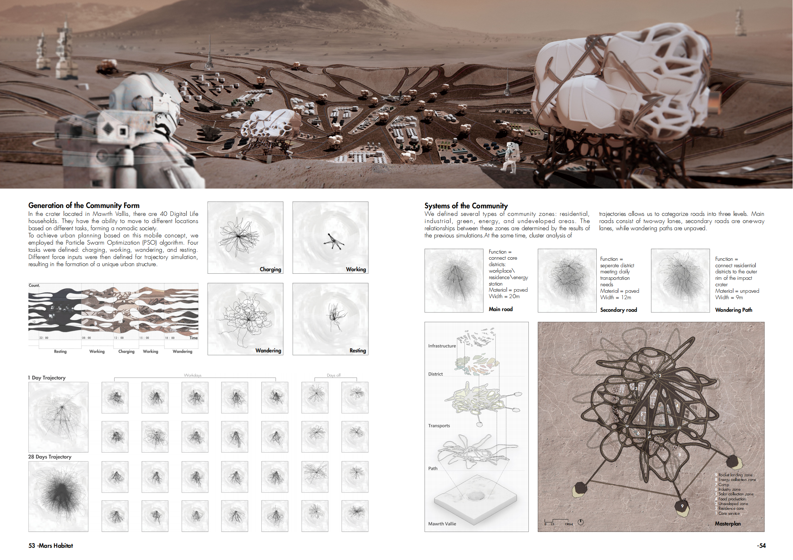
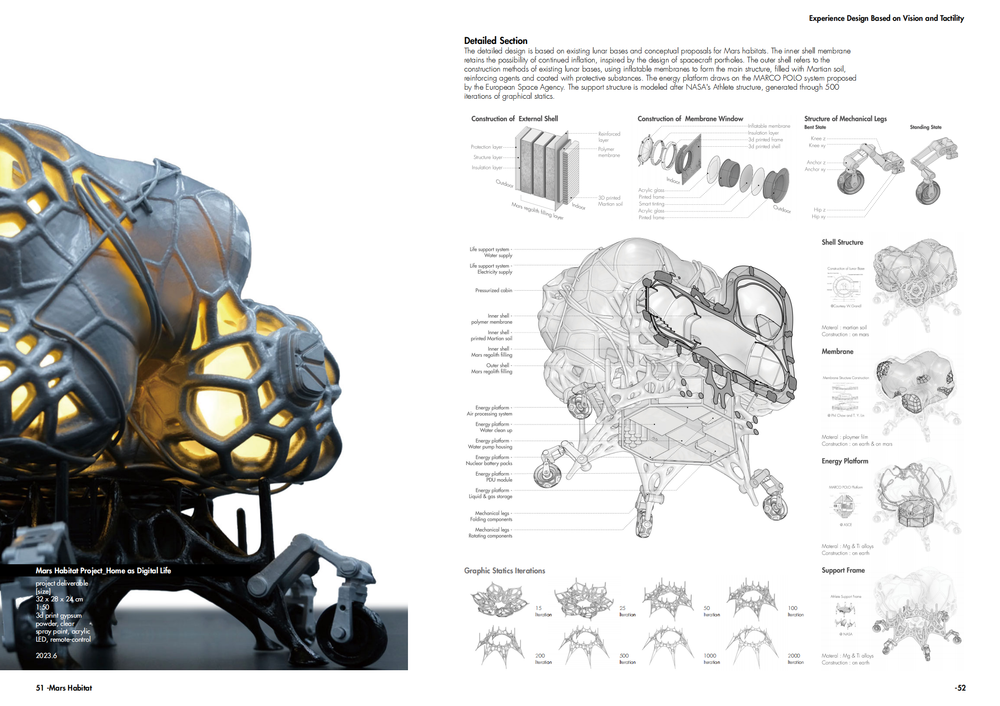
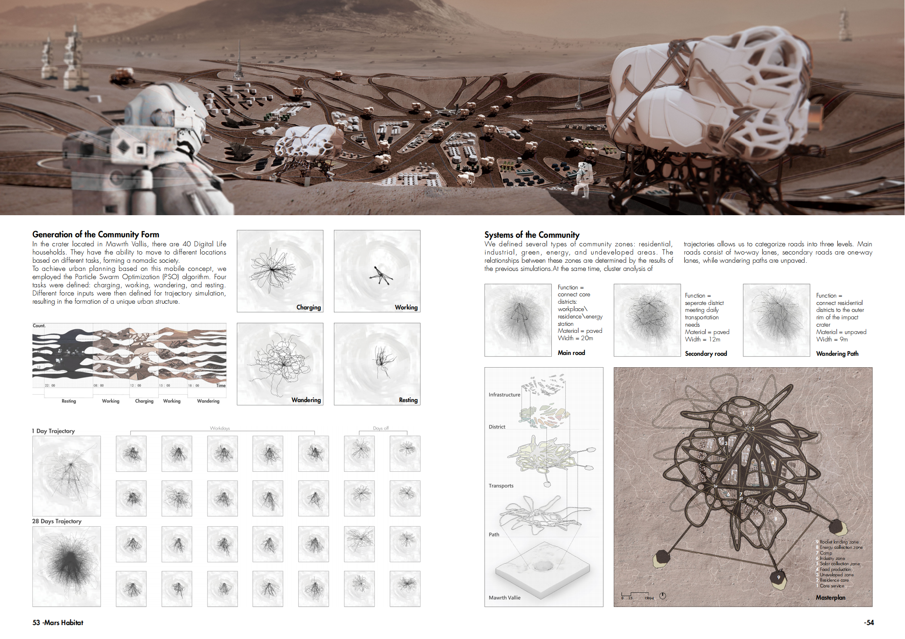
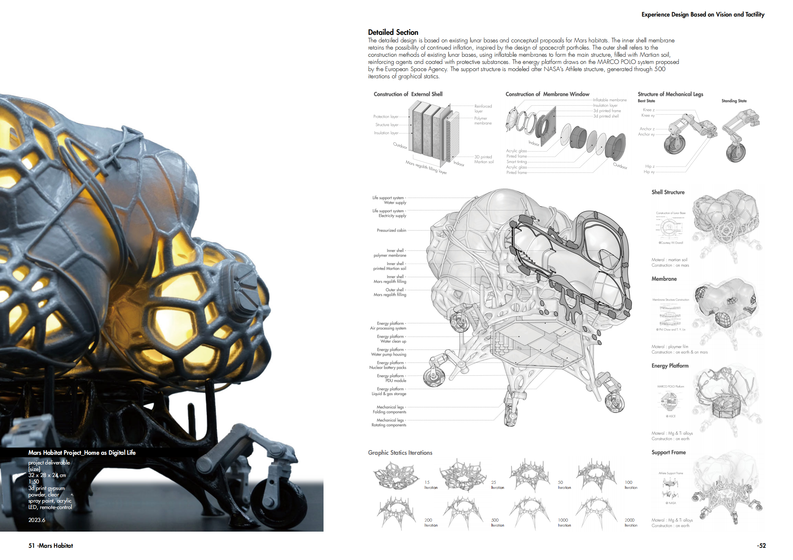
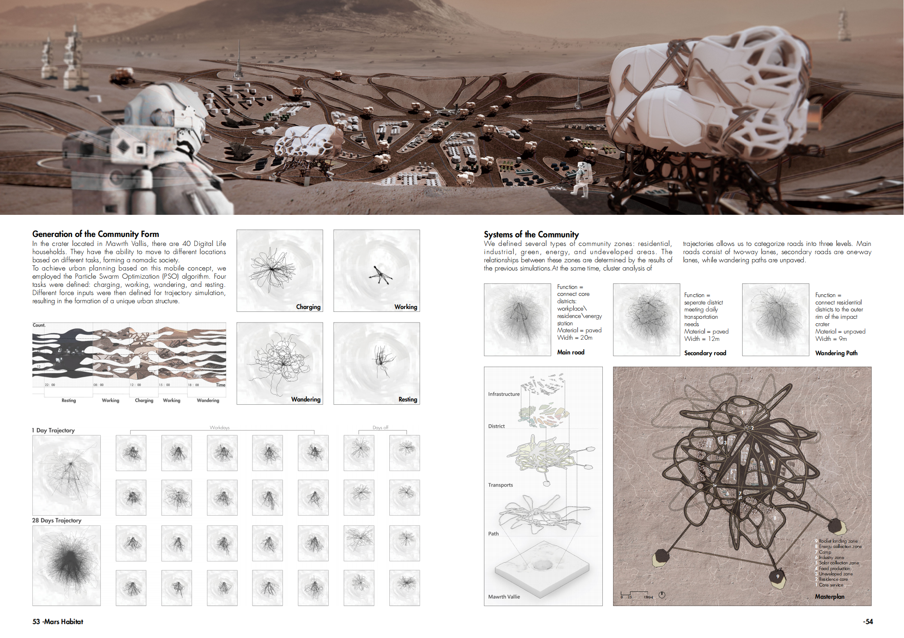
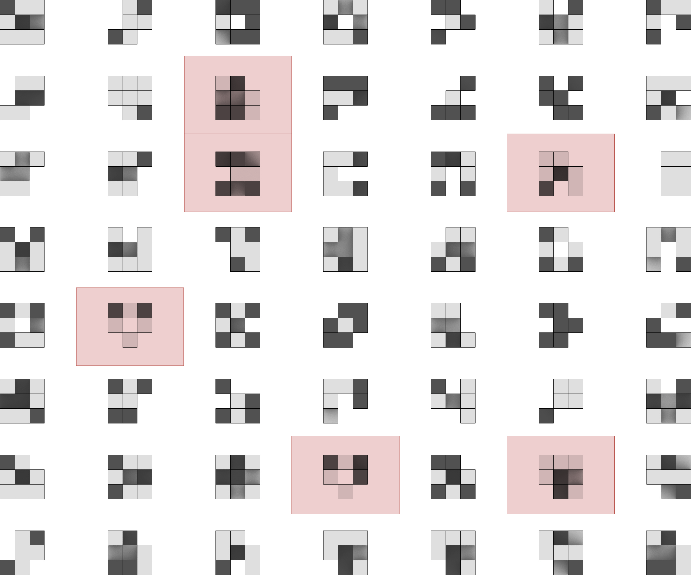
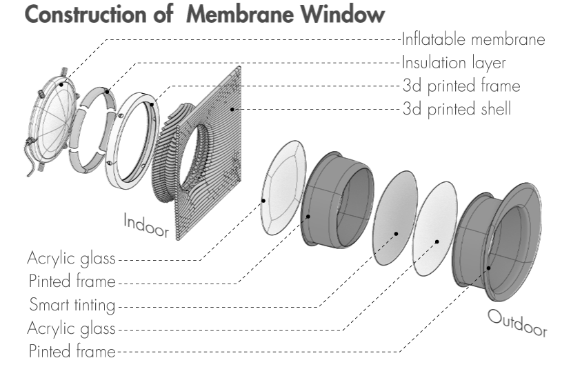

 





Mars Habitat
-
The concept of the project stems from an exploration of the psychological needs of survivors on Mars. Since the Martian surface lacks vegetation and the reduced gravity environment poses significant physiological challenges, we proposed an idea: could the internal environment provide emotional experiences to compensate for the deficiencies of the external environment?
At the same time, we observed that pneumatic membrane structures have been increasingly applied in the construction of habitats in cis-lunar space. Therefore, we aim to address the emotional needs of Martian survivors by utilizing the volume and tactile variability of pneumatic membrane structures.
1.User Journey Map
Based on the synchronization of emotions between users and the digital life, we propose 6 primary scenarios. The Digital Life is composed of an inflatable membrane structure, which interacts with individuals through varying degrees of hardness. For example, when both are in a happy state, the inflation pressure of the membrane increases, allowing for experiences akin to playing ball games. Conversely, when the user is down, the pressure decreases, fostering a softer interaction between them.
2.Form Generation
Since we used the interaction between humans and the environment as a core parameter to generate the building's form, we employed cellular automata and the Kangaroo physics model to simulate various interaction shapes. Additionally, we incorporated calculations of the building's surface area and volume to ensure that the selected form not only meets the functional requirements for interaction but also adapts well to the Martian living environment.
To further enhance the complexity of the design, we used particle algorithms to create the form of the equipment pipelines on the outer skin of the structure.
3.Detailed Sections
The detailed design is based on existing lunar bases and conceptual proposals for Mars habitats. The inner shell membrane retains the possibility of continued inflation, inspired by the design of spacecraft portholes. The outer shell refers to the construction methods of existing lunar bases, using inflatable membranes to form the main structure, filled with Martian soil, reinforcing agents and coated with protective substances. The energy platform draws on the MARCO POLO system proposed by the European Space Agency. The support structure is modeled after NASA's Athlete structure, generated through 500 iterations of graphical statics.
-
Design Type: Experience Design, Computational Design, Architecture Design
Project Type: Graduate Studio Work, Tsinghua University
Time: 2023.3-2023.6
Instructor: Prof.Xu Weiguo, Dean of School of Future Human Habitat Tsinghua SIGS
Collaborator: Chunyin Liu, Zixin Su
Main Contributions:
1.Defined 6 interaction scenarios between humans and the environment on Mars, and use these scenarios as parameters for input into the physics simulator to generate corresponding architectural forms;
2.Implemented the Cellular Automata (CA) algorithm and perform shape selection based on physical attributes, we need to first define the rules for the algorithm and then use statistical measures to filter and select the optimal form;
3.Conducted research on existing structures of lunar and cis-lunar bases, as well as conceptual designs for Earth-Mars bases, to design a composite architectural shell that meets the living environment requirements on Mars；
4.3D printed a 1:50 scale model and applied spray painting；
Prize: Outstanding Graduate Studio Work of School of Architecture, Tsinghua University





